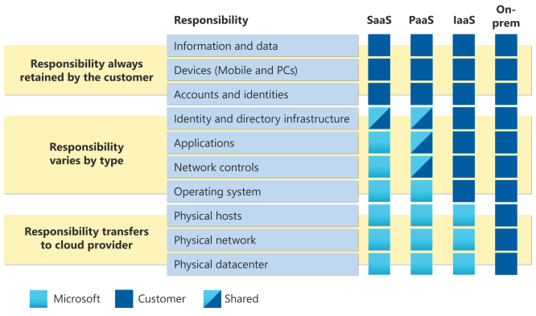
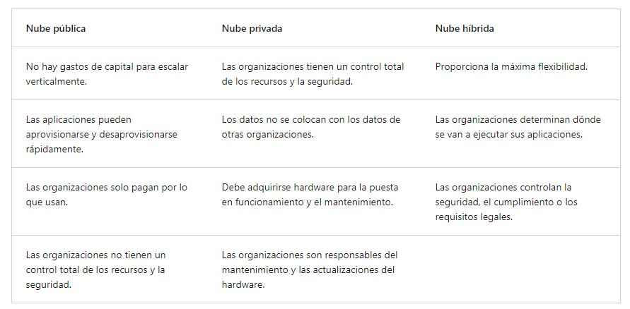
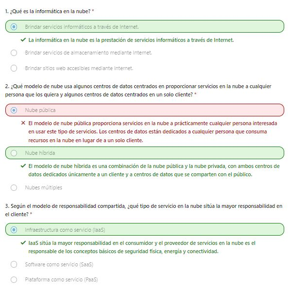

Microsoft Azure es una plataforma de informática en la nube con un conjunto de servicios que se amplía continuamente para ayudarle a crear soluciones que satisfagan sus objetivos empresariales. Los servicios de Azure admiten todo, desde lo simple hasta lo complejo. Azure tiene servicios web sencillos para hospedar su presencia empresarial en la nube. Azure también admite la ejecución de equipos totalmente virtualizados que administran las soluciones de software personalizadas. Azure proporciona una gran cantidad de servicios basados en la nube, como el almacenamiento remoto, el hospedaje de bases de datos y la administración centralizada de cuentas. Azure también ofrece nuevas funcionalidades, como la inteligencia artificial (IA) y servicios centrados en el Internet de las cosas (IoT). En esta serie, tratará los conceptos básicos de informática en la nube, se le presentarán algunos de los servicios principales proporcionados por Microsoft Azure y obtendrá más información sobre los servicios de gobernanza y cumplimiento que puede usar.
El módulo Aspectos básicos de Azure es una serie de tres rutas de aprendizaje que lo ayudan a familiarizarse con Azure y sus numerosos servicios y características. Ya sea que esté interesado en los servicios de proceso, red o almacenamiento, en aprender sobre los procedimientos recomendados de seguridad en la nube o explorar las opciones de gobernanza y gestión, piense en el módulo Aspectos básicos de Azure como su guía seleccionada para Azure. Aspectos básicos de Azure incluye ejercicios interactivos que ofrecen experiencia práctica con Azure. Muchos ejercicios proporcionan un entorno temporal de Azure Portal denominado espacio aislado, que le permite practicar con la creación gratis de recursos en la nube y a su ritmo. No se requiere experiencia de TI técnica. Sin embargo, tener conocimientos generales de TI le ayudará a sacar el máximo partido de su experiencia de aprendizaje.
Tanto si acaba de empezar a trabajar con la nube como si ya tiene experiencia en la nube, Aspectos básicos de Azure le proporciona todo lo que necesita para empezar. Con independencia de sus objetivos, Aspectos básicos de Azure puede ayudarle. Debe realizar este curso si:
La serie de rutas de aprendizaje de aspectos básicos de Azure puede ayudarle a prepararse para el examen AZ-900: Aspectos básicos de Microsoft Azure. Este examen incluye tres áreas de dominios de conocimiento:
En este módulo, se le presentarán los conceptos generales de la nube. Empezará con una introducción general a la nube. Después, profundizará en conceptos como responsabilidad compartida, modelos en la nube diferentes y explorará el método único de precios para la nube. Si ya conoce bien la informática en la nube, puede revisar este módulo de forma somera.
La informática en la nube es la prestación de servicios informáticos a través de Internet. Los servicios informáticos incluyen infraestructura de TI común, como máquinas virtuales, almacenamiento, bases de datos y redes. Los servicios en la nube también amplían las ofertas de TI tradicionales para incluir cosas como Internet de las cosas (IoT), el aprendizaje automático (ML) y la inteligencia artificial (IA). Dado que la informática en la nube usa Internet para ofrecer estos servicios, no es necesario que la infraestructura física la restrinja del mismo modo que un centro de datos tradicional. Esto significa que si necesita aumentar rápidamente la infraestructura de TI, no tiene que esperar a crear un centro de datos, sino que puede usar la nube para expandir rápidamente la superficie de TI. En este breve vídeo se proporciona una introducción rápida a la informática en la nube.
.png)
.png)
.png)
.png)
.png)
.png)
.png)
.png)
.png)
.png)
.png)
.png)
.png)
.png)
.png)
.png)
.png)
Es posible que haya oído hablar del modelo de responsabilidad compartida, pero es posible que no comprenda lo que significa o cómo afecta a la informática en la nube. Comience con un centro de datos corporativo tradicional. La empresa es la responsable de mantener el espacio físico, garantizar la seguridad, y mantener o reemplazar los servidores si ocurre algo. El departamento de TI se encarga de mantener toda la infraestructura y el software necesarios para mantener el centro de datos en funcionamiento. También es probable que sean los responsables de mantener todos los sistemas revisados y con la versión correcta. Con el modelo de responsabilidad compartida, estas responsabilidades se comparten entre el proveedor de servicios en la nube y el consumidor. La seguridad física, la alimentación, la refrigeración y la conectividad de red son responsabilidad del proveedor de servicios en la nube. El consumidor no tiene acceso al centro de datos, por lo que no tendría sentido que tuviera ninguna de esas responsabilidades. Al mismo tiempo, el consumidor es el responsable de los datos y la información almacenados en la nube. (No querrá que el proveedor de servicios en la nube pueda leer su información). El consumidor también es el responsable de la seguridad de acceso, lo que significa que solo da acceso a aquellos que lo necesitan. Entonces, para algunas cosas, la responsabilidad depende de la situación. Si usa una base de datos SQL en la nube, el proveedor de servicios en la nube será el responsable de mantener la base de datos real. Pero sigue siendo responsabilidad suya que los datos se ingieran en la base de datos. Si ha implementado una máquina virtual y ha instalado una base de datos SQL en ella, será el responsable de las revisiones y actualizaciones de la base de datos, así como del mantenimiento de los datos y la información almacenadas en ella. Con un centro de datos local será el responsable de todo. Con la informática en la nube esas responsabilidades cambian. El modelo de responsabilidad compartida está muy vinculado a los tipos de servicio en la nube (que se tratan más adelante en esta ruta de aprendizaje): infraestructura como servicio (IaaS), plataforma como servicio (PaaS) y software como servicio (SaaS). IaaS sitúa la mayor responsabilidad en el consumidor y el proveedor de servicios en la nube es el responsable de los conceptos básicos de seguridad física, energía y conectividad. En el extremo opuesto, SaaS sitúa la mayor parte de la responsabilidad en el proveedor de servicios en la nube. PaaS, siendo un punto intermedio entre IaaS y SaaS, se encuentra en algún lugar del medio y distribuye uniformemente la responsabilidad entre el proveedor de nube y el consumidor. En el diagrama siguiente se resalta cómo el modelo de responsabilidad compartida informa de quién es responsable de qué, en función del tipo de servicio en la nube.
Al usar un proveedor de nube, siempre será responsable de:
El proveedor de nube siempre es el responsable de lo siguiente:
El modelo de servicio determinará la responsabilidad de cosas como lo siguiente:
¿Qué son los modelos en la nube? Los modelos en la nube definen el tipo de implementación de recursos en la nube. Los tres principales modelos en la nube son: privados, públicos e híbridos.
Comencemos con una nube privada. Una nube privada es, de alguna manera, la evolución natural de un centro de datos corporativo. Es una nube que brinda servicios de TI a través de Internet y es utilizada por una sola entidad. La nube privada proporciona un control mucho mayor para la empresa y su departamento de TI. Sin embargo, también incluye un mayor costo y menos ventajas que una implementación en la nube pública. Por último, una nube privada se puede hospedar desde el centro de datos del sitio. También puede hospedarse en un centro de datos dedicado fuera del sitio, posiblemente incluso por un tercero que haya dedicado ese centro de datos a su empresa.
Un proveedor de nube de terceros crea, controla y mantiene una nube pública. Con una nube pública, cualquier persona que quiera comprar servicios en la nube puede acceder a los recursos y usarlos. La disponibilidad pública general es una diferencia clave entre las nubes públicas y privadas.
Una nube híbrida es un entorno informático que usa nubes públicas y privadas en un entorno interconectado. Se puede usar un entorno de nube híbrida para permitir el incremento de una nube privada y acomodarse al aumento de la demanda temporal mediante la implementación de recursos de nube pública. La nube híbrida se puede usar para proporcionar una capa adicional de seguridad. Por ejemplo, los usuarios pueden elegir de forma flexible qué servicios mantener en la nube pública y qué implementar en su infraestructura de nube privada. En la tabla siguiente se resaltan algunos aspectos comparativos clave entre los modelos de nube.
Un cuarto escenario y cada vez más probable es un escenario de varias nubes. En un escenario de varias nubes, se usan varios proveedores de nube pública. Tal vez use diferentes características de diferentes proveedores de nube. O quizás haya iniciado su recorrido en la nube con un proveedor y esté en proceso de migración a otro proveedor. Independientemente, en un entorno de varias nubes lidia con dos (o más) proveedores de nube pública y administra los recursos y la seguridad en ambos entornos.
Azure Arc es un conjunto de tecnologías que ayudan a administrar el entorno en la nube. Azure Arc puede ayudar a administrar el entorno de nube, tanto si se trata de una nube pública exclusiva de Azure, una nube privada en el centro de datos, una configuración híbrida o incluso un entorno de varias nubes que se ejecuta en varios proveedores de la nube a la vez.
¿Qué ocurre si ya está establecido con VMware en un entorno de nube privada, pero quiere migrar a una nube pública o híbrida? Azure VMware Solution le permite ejecutar las cargas de trabajo de VMware en Azure con una integración y escalabilidad perfectas.
Al comparar los modelos de infraestructura de TI, hay dos tipos de gastos que se deben tener en cuenta. Gastos de capital y gastos operativos Los gastos de capital suelen ser un gasto por adelantado único para comprar o proteger recursos tangibles. Un edificio nuevo, volver a pavimentar el aparcamiento, crear un centro de datos o comprar un coche de empresa son ejemplos de gastos de capital. En cambio, los gastos operativos es gastar dinero en servicios o productos a lo largo del tiempo. Alquilar un centro de convenciones, alquilar un vehículo de empresa o suscribirse a servicios en la nube son ejemplos de gastos operativos. La informática en la nube se encuentra en la partida de gastos operativos porque funciona en un modelo basado en el consumo. Con la informática en la nube, no paga por la infraestructura física, la electricidad, la seguridad ni nada más asociado al mantenimiento de un centro de datos. En lugar de eso, paga por los recursos de TI que usa. Si no usa ningún recurso de TI este mes, no los pagará. Este modelo basado en el consumo aporta muchas ventajas, por ejemplo:
Con un centro de datos tradicional, intenta calcular las necesidades futuras de los recursos. Si este cálculo se ha sobrestimado, gasta más en el centro de datos de lo que necesita y puede desperdiciar dinero. Si, por el contrario, se subestima, el centro de datos alcanzará rápidamente la capacidad, y las aplicaciones y los servicios pueden sufrir una disminución en el rendimiento. Arreglar un centro de datos con aprovisionamiento insuficiente puede tardar mucho tiempo. Es posible que tenga que pedir, más hardware, recibirlo e instalarlo. También deberá agregar alimentación, refrigeración y redes para el hardware adicional. En un modelo basado en la nube, no tiene que preocuparse por obtener las necesidades justas de recursos. Si descubre que necesita más máquinas virtuales, se agregan más. Si la demanda disminuye y no necesita tantas máquinas virtuales, se quitan las máquinas según sea necesario. En cualquier caso, solo paga por las máquinas virtuales que usa, no por la "capacidad adicional" que tiene el proveedor de nube.
La informática en la nube es la prestación de servicios informáticos a través de Internet mediante un modelo de precios de pago por uso. Normalmente solo se paga por los servicios en la nube que se usan, lo que permite:
Dicho de otro modo, la informática en la nube es una forma de alquilar potencia de proceso y almacenamiento de un centro de datos de terceros. Los recursos de la nube se pueden tratar igual que los recursos de un centro de datos propio. Pero, a diferencia de en su propio centro de datos, cuando haya terminado de usar recursos en la nube, los devuelve. Únicamente se le cobrará por lo que use. En lugar de mantener las CPU y el almacenamiento en un centro de datos, se alquilan durante el tiempo que sea necesario. El proveedor de nube se encarga de mantener la infraestructura subyacente por usted. La nube permite resolver rápidamente los desafíos empresariales más difíciles y proporcionar soluciones de vanguardia a los usuarios.
